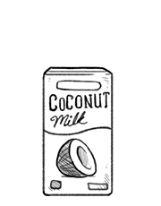

coconut milk
Coconut milk is extracted from the grated pulp of mature coconuts. The rich taste of the milk is due to its high oil content. This high-fat milk is a perfect base for ice cream. There are many varieties, differentiated on fat content: coconut cream (up to 50 percent fat), coconut milk (20 percent fat) and coconut skim milk (least fat). The terminology is not always described like this in products sold in western countries. Traditionally, coconut milk is made from grating the white inner flesh of mature coconuts and mixing the shredded pulp with a bit of hot water to suspend the fat in the pulp. The grating process was often done by hand.
coconut
Coconuts stem from the coconut tree, or Cocos nucifera. Coconuts are known for their versatility of uses, ranging from food to cosmetics. The water in young coconuts is very high in electrolytes. They are a good source of protein, iron and zinc.
They are ideal for making deserts, and are used in a variety of dishes like ice cream, beverages, frostings on cakes, smoothies, curry sauces etc. Whole coconuts will keep at room temperature for two weeks. For longer storage, refrigerate.